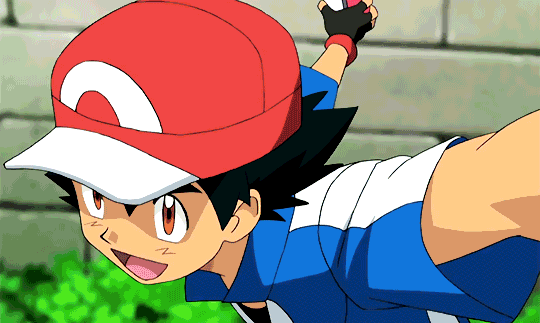
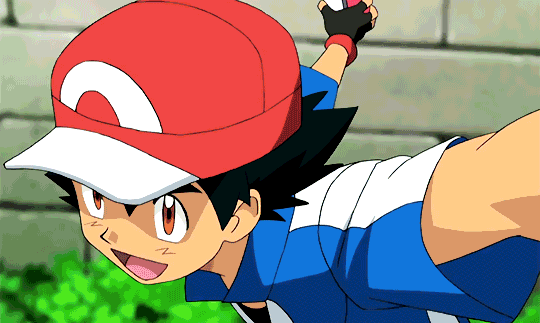

IT'S ALL ABOUT POKEMON
- Pikachu
- Pikachu is a yellow, mouse-like creature with electrical abilities. It is a major character in the Pokémon
franchise, serving as its mascot and as a major mascot for Nintendo.
Pikachu is widely considered to be the most popular and well-known Pokémon species, largely due to its
appearance in the Pokémon anime television series as the companion of protagonist Ash Ketchum. In most
vocalized appearances Pikachu is voiced by Ikue Ōtani, though it has been portrayed by other actors, notably
Ryan Reynolds in the live-action animated film Pokémon Detective Pikachu. Pikachu has been well received by
critics, with particular praise given for its cuteness, and has come to be regarded as an icon of Japanese
pop culture.


- Ash Ketchum
- Ash Ketchum, known as Satoshi in Japan, is a fictional character in the Pokémon franchise owned by Nintendo. He is the protagonist of the Pokémon anime and certain manga series as well as on various merchandise related to the franchise.
As the protagonist of the Pokémon anime, Ash has appeared in all but one episode of the anime, all the films, and several of the television specials.
Due to the huge popularity, success, and longevity of the Pokémon anime series around the world since its debut,Ash has gone on to become one of the most well-known and recognizable fictional characters of all-time due to his status as the protagonist of the Pokémon anime.However, he is often overshadowed in series representation by the franchise mascot, Pikachu. Despite this, Ash is considered a pop culture icon, and a figurehead character of the wave of anime in the late 1990s; which is credited by most anime fans as having popularized anime in the west, alongside others such as Goku of Dragon Ball Z, Yugi of Yu-Gi-Oh!. He is also considered a major icon for Japanese pop culture in the United States.
 

- Brock
- Brock, known as Takeshi in Japan, is a fictional character in the Pokémon franchise owned by Nintendo. In the Pokémon video games, he is the Gym Leader of Pewter City and mainly uses Rock-type Pokémon. In the anime series, Ash comes across a man that is later revealed to be Brock's father.
He explains that Brock wanted to become a Pokémon Master but due to his father leaving, Brock had to take care of his many, many siblings and could not leave. This is why he became a gym leader, to stay close to his family. His father comes back and states that he will take care of the family. Brock left his position as a Gym Leader to travel alongside Ash Ketchum and became a revered Pokémon breeder. He later cultivates his skill in medicine, and goes to Pewter City in order to train and become a Pokémon doctor. He has also appeared in several Pokémon manga series, including Pokémon Adventures and the Ash & Pikachu manga.

- Other characters :
-
-